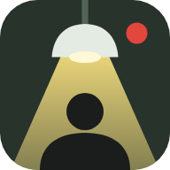

Распит во Одделението за крвни деликти, Скопје
Службена белешка, предмет 1147/26
Скопје, ноември. Ноќта меѓу вторник и среда.
Вчера околу 20:15 часот, во својот стан во Карпош, избоден е Дарко Ристевски (52), градежен инспектор во Град Скопје. Неговата ќерка Сара (19) е исчезната.
Во 23:40 патрола го приведе Горан Трајковски, поранешен боксер кој работи како обезбедување во „Мицевски Градба“. Во багажникот на неговата Шкода е најдена јакна со крв.
Трајковски не зборува. Но постојано гледа во часовникот на ѕидот.
„Викторе, девојката можеби е уште жива, а Трајковски знае каде е. Имаш време до зори. Не удирај и не заканувај се, ќе побара адвокат и ништо нема да дознаеме. Работи со доказите од досието. Ако заглавиш, јави ми се.“
Владимир Илиевски, началник на Одделението за крвни деликти
Се поврзува…
Допис до инспектор Николов

Додај го „Пред зори“ на почетниот екран. Се отвора на цел екран, без прелистувач, а распитот те чека таму каде што застана.
Допри го копчето за споделување , па избери „Додај на почетниот екран“.